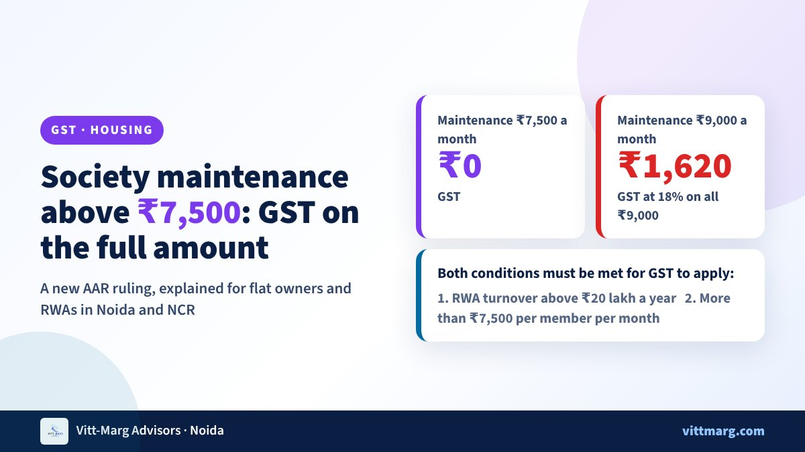

Many high-rise societies in Noida, Greater Noida West and Ghaziabad now charge more than ₹7,500 a month as maintenance, especially for larger flats. When the bill shows 18% GST on the whole amount, residents often ask whether GST should apply only to the part above ₹7,500. A ruling of the Telangana Authority for Advance Ruling on 30 October 2026 has answered that question again: GST applies to the full amount.

The ruling
In the case of Sattva Magnus Apartment Owners Mutually Aided Cooperative Maintenance Society Ltd. (TS AAR Order No. 13/2026, 30 October 2026), a non-profit residents' society in Hyderabad asked whether it had to charge GST on the whole contribution when a member pays more than ₹7,500 a month. The authority said yes. The exemption in entry 77 of Notification 12/2017-Central Tax (Rate) covers contributions only up to ₹7,500 a month per member. Once a member's contribution crosses that figure, the whole of it is taxable at 18%.
This matches what the CBIC said in its 2019 circular on RWAs. An advance ruling binds only the applicant, but the reasoning is the same across states, so societies in Uttar Pradesh should expect the same view.
Worked examples
| Monthly maintenance per flat | RWA turnover | GST a month |
|---|---|---|
| ₹6,000 | ₹45 lakh | Nil, because it is within ₹7,500 |
| ₹7,500 | ₹45 lakh | Nil, because the limit is "up to ₹7,500" |
| ₹9,000 | ₹45 lakh | ₹1,620, which is 18% of the full ₹9,000 |
| ₹9,000 | ₹18 lakh | Nil, because the RWA's turnover is below ₹20 lakh |
On a ₹9,000 bill, GST on the full amount comes to ₹1,620 a month. GST on only the excess of ₹1,500 would have been ₹270. Over a year the difference is about ₹16,200 per flat.
Points flat owners often miss
- The limit is per flat. If you own two flats in the same society, the ₹7,500 limit applies to each flat separately.
- Electricity and water at cost. Where the society bills these separately at actual cost, as in the ruling, they are generally kept out of the maintenance figure. Check how your society bills them.
- Sinking fund and repair fund. Collections for these are usually treated as part of the contribution for services and counted towards ₹7,500.
- Property tax or electricity collected for the authority and paid on at actual cost is usually not part of the RWA's own supply.
- Commercial units. Shops or offices in the society do not get the ₹7,500 exemption.
What RWAs should do
- Check the turnover for the year. If it is above ₹20 lakh, register for GST.
- Bill GST only to flats whose monthly contribution is above ₹7,500, and on the full amount for those flats.
- Claim input tax credit on GST paid on lift maintenance, security, housekeeping contracts and repairs, which reduces the net cost to residents.
- Show the GST working on the bill, so residents can see why it is charged.
Free tools: check your tax with our income tax calculator (old vs new regime, FY 2026-27), and see every due date in the monthly compliance calendar.
Frequently asked questions
Is GST charged on society maintenance above ₹7,500?
Yes, if the RWA's annual turnover is above ₹20 lakh and the maintenance is above ₹7,500 per member per month. In that case 18% GST applies to the full amount.
Is GST charged only on the amount above ₹7,500?
No. The Telangana AAR ruling of 30 October 2026 and the CBIC's 2019 circular both say the whole contribution becomes taxable once it crosses ₹7,500 a month.
Does the ₹7,500 limit apply per flat or per owner?
The limit applies to each flat. An owner with two flats in the same society gets the ₹7,500 limit separately for each.
Does a small society have to charge GST on maintenance?
No. If the RWA's aggregate turnover is up to ₹20 lakh a year, it does not need to charge GST, even if maintenance is above ₹7,500.
Can an RWA claim input tax credit?
Yes. A registered RWA can claim credit on GST paid on services and goods used for the society, such as lift maintenance, security and repairs.
How Vitt-Marg helps
We handle monthly GST returns, reverse charge and TDS compliance, GSTR-2B reconciliation and replies to notices for businesses across Delhi NCR. If these changes affect your purchases or sales, send us a list of your scrap and reverse charge vendors and we will tell you exactly what to change.
General information, current as of 22 November 2026, not advice for a specific case. Notifications and rules change often, so check with us before acting on it.